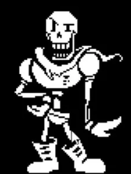
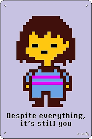

Papyrus
Papyrus és un esquelet molt enèrgic, divertit i amb molta confiança en si mateix. Somia amb ser membre de la Guàrdia Reial i destaca per la seva personalitat exagerada, simpàtica i molt carismàtica.
SUBTITULO
Undertale és una aventura RPG on un humà cau en un món subterrani habitat per monstres. Per poder trobar el camí de tornada, haurà de recórrer llocs desconeguts, conèixer personatges molt diferents entre si i prendre decisions que marcaran la seva experiència. Amb una història original, moments emocionants i un estil únic, el joc convida el jugador a descobrir que no tot és el que sembla.

Papyrus és un esquelet molt enèrgic, divertit i amb molta confiança en si mateix. Somia amb ser membre de la Guàrdia Reial i destaca per la seva personalitat exagerada, simpàtica i molt carismàtica.

Sans és el germà major de Papyrus. Apareix a l'inici del bosc de Snowdin, situat als afores del poble de Snowdin, donant una petita sorpresa al jugador degut als sons que fa quan s'acosta a aquest. És un dels personatges principals en Undertale i, depenent de les eleccions del jugador, pot ser tant un personatge amigable i un aliat, com un antagonista heroic.

Frisk és un personatge jugable i protagonista principal del videojoc. Després que Frisk cau al Subsol, s'embarca en un viatge per a tornar a la superfície. Frisk és l'últim humà a caure al Subsol després de viatjar al Mont Ebott. Frisk no és l' "humà caigut" a qui el jugador nomena el començament del joc. El seu nom només es revela en la Ruta Pacifista Veritable.